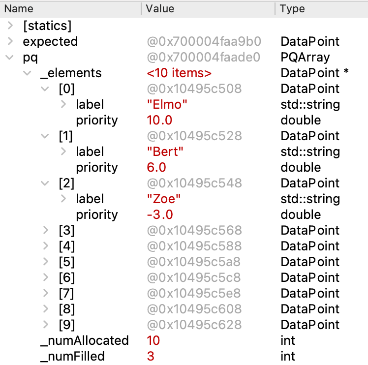

What is a Priority Queue?
A standard queue processes elements in the first-in, first-out ("FIFO") manner typical of ordinary waiting lines. New elements are added to the back of the queue and the next element to be processed is taken from the front. Queues are a useful abstraction, but a FIFO strategy isn't always what is needed.
A hospital emergency room, for example, needs to schedule patients according to priority. A patient with a more critical problem will pre-empt others who arrived earlier. The data structure that supports this behavior is called a priority queue. Each element is enqueued with an associated priority, and dequeue retrieves the element with the most urgent priority. There are many practical applications for a priority queue, both inside and outside computer science!
PQArray interface
A C++ class is the perfect way to provide this new collection type. The PQArray class has a simple, clean interface expressed in high-level operations such as enqueue and dequeue. All the messy internal details (handling dynamic memory, organizing the data, finding the most urgent priority and so on) can be neatly tucked away inside the class implementation. So far this quarter, you have relied on the Stanford library to provide the class implementation, this time you will cross behind the wall of abstraction to build the implementation yourself.
The interface for the PQArray class is shown below. It is nearly identical to that of the standard Queue. The only operational difference is the element retrieved by peek/dequeue is the element of most urgent priority rather than one that was enqueued first.
In an ideal world, the priority queue would allow the client to set the element type like the Stanford collections do (that is, you can choose whether you want a Queue<int> or Queue<string>), but the C++ language features for templates/generics go a bit beyond the scope of what we've learned. Instead, we will fix the element type to always be a DataPoint that bundles a string label with a numeric priority. We introduced the DataPoint struct in the warmup and have reproduced its type declaration below:
struct DataPoint {
string label;
double priority;
};
Important Note: The
priorityfield is a double value. A smaller double value indicates a more urgent priority than a larger double value, i.e. priority 1.0 is more urgent and will be dequeued before priority 3.14. The DataPoint with the minimum double value for priority is treated as the most urgent and is the one retrieved by peek/dequeue.
class PQArray {
public:
PQrray();
~PQArray();
void enqueue(DataPoint element);
DataPoint dequeue();
DataPoint peek() const;
bool isEmpty() const;
int size() const;
void clear();
private:
DataPoint* _elements;
int _numAllocated;
int _numFilled;
};
PQArray implementation
While the eventual goal is to implement the Priority Queue using a fancy high-performance data structure, you will first work with a simpler implementation that stores the elements in an array. This task will acclimate you to the Priority Queue interface and the code to implement a C++ class and will give you practice with pointers, arrays, dynamic memory, and testing a class interface.
We start you off with a mostly-complete implementation of this PQArray class. Your first job is to carefully review this provided code. Read over the class interface in pqarray.h and then proceed to the class implementation in pqarray.cpp. Confirm your understanding of the existing design and code by answering the following questions in short_answer.txt:
Q5. There are extensive comments in both the interface (pqarray.h) and implementation (pqarray.cpp). Explain how and why the comments in the interface differ from those in the implementation. Consider both the content and audience for the documentation.
Q6. Although code within the body of a member function can directly access the object's member variables, the implementer may instead choose to call public member functions to get information about the object. For example, note how the operations isEmpty() and peek() intentionally call size() instead of using _numFilled or how dequeue() calls peek() to retrieve the frontmost element. Why might be this be considered a better design?
Your task
The provided PQArray class is mostly complete, save for the missing body of PQArray::enqueue. Your task is to implement this member function. This operation adds a new element to the queue.
Your code must work correctly with the other provided operations unchanged. Before writing any code, be sure that you understand how the dynamic array is managed in the constructor/destructor and how the implementation peek/dequeue depends on the array elements being stored in order of decreasing priority value.
The sample client code below enqueues three elements into an empty queue.
PQArray pq;
pq.enqueue( {"Zoe", -3} );
pq.enqueue( {"Elmo", 10} );
pq.enqueue( {"Bert", 6} );
Here is a screenshot of the debugger displaying the internal contents of pq after executing the above code. (Debugger configured to show _elements as an "Array of 10 items" as in warmup) The three elements in the array are stored in order of decreasing priority value.

A subsequent call to pq.enqueue({"Kermit", 5}) would insert the new element between Bert and Zoe, updating the array contents to:
[0] = {"Elmo", 10}
[1] = {"Bert", 6}
[2] = {"Kermit", 5}
[3] = {"Zoe", -3}
The enqueue operation must find the correct position in the array to place the new element and move the other elements aside to make room for it. Your main task will be to find a generalized, robust way to do so, sharpening your array manipulation and dynamic memory skills along the way.
The other important job of enqueue is to grow the array to accommodate additional elements when it is filled to capacity. Growing the array is a mildly expensive operation, so it should only be done when needed and be opportunistic about anticipating future growth. When enlarging the array, you should make the new allocation twice as large as the previous capacity. This will provide storage for many additional elements before having to grow again.
The task of enlarging the array fits nicely in a helper function. Add a declaration of the helper function to the private section of the class interface and define it as part of the class implementation. You can then call the helper from enqueue when needed.
Implementation requirements
- Do not change the code for any other functions other than
enqueue. You may add any private helper functions that you might find useful (i.e. to resize the array, to find position to insert element, etc.) - The core of the enqueue operation comes down to inserting a new element into its proper place within the already sorted array. One clean strategy is to add the new element onto the end of the array and then proceed to swap it with its left neighbor until it settles into correct position (akin to a single pass of the inner loop of bubble sort). Alternatively you could start at the end of the array and work backwards, sliding elements to the right to open up a space at the correct position to place the new element (akin to a single pass of the inner loop of insertion sort). While both of these suggested operations are derived from a full sort algorithm, enqueue should not re-sort the entire array. The existing elements in the array are already sorted and do not need rearrangement (and doing so adds necessary work). There is only a single element that needs to be swapped/inserted into the proper position.
- Revisit the lecture content on arrays to review the process to expand the capacity of a dynamic array. This is a small but tricky operation – ask questions to be sure you understand each step in the process.
- The class is responsible for proper allocation and deallocation of dynamic memory. Take care to properly deallocate any memory that is no longer is needed, such as when outgrowing a piece of memory or in the class destructor.
Testing across the abstraction boundary
The abstraction boundary that separates the client's use from the internals of the implementation is a great benefit for managing complexity, but when trying to develop and debug that implementation, that separation can be a bit of nuisance. Here are some suggestions for how to straddle that boundary and find ways to test the internals of a class from client code.
- Many test cases can be structured to stay entirely client-side. A client-side test case calls functions in the public interface and confirms that the externally observed behavior is correct. For example, a test case could check a newly constructed PQArray is empty or that after enqueueing 3 elements, the size is 3. A more complex case could enqueue a sequence of entries with random priorities and confirm that the elements are dequeued in priority order.
- Ideally you would test each operation independently, but some operations are intrinsically bound together. To test peek, you need to have first enqueued. If peek returns the wrong value, is it due to bug in peek or did enqueue botch something? You could figure out which by looking at the contents of the internal array, but the client/testing code doesn't have access to the private data! What you need is some kind of "backstage pass" when testing; here are some ideas of how to make your own:
- The debugger is a friend here! Stop in the debugger, find the PQArray object in the
Variablespane and expand it to see its member variables. For example, set a breakpoint before a call to peek or enqueue, review the contents of the internal array,Step Overthe call, and then review the updated array to confirm that the operation did its job correctly. Neat! - The PQArray starter code defines the
debugConfirmInternalArraymember function. This debug helper uses its insider access to raise an error if the array contents are not properly ordered. You can insert a call to the debug helper at any time to check for a problem. For example, one of the provided tests makes a call todebugConfirmInternalArraybetween every operation as a failsafe. - The debug functions
debugGetInternalArrayContentsanddebugSetInternalArrayContentsprovide access to the contents of the internal array. The debugGet function reads the contents and the debugSet function replaces the contents. A test case can call debugSet to configure the PQueue into a particular state, perform an operation, call debugGet to retrieve the updated state and then confirm the changes were as expected. This invasive level of access can be useful for setting up a precise configuration targeting a very specific scenario. Review the code inpqarray.cppto understand how more about how these functions operate and how to use them.
- The debugger is a friend here! Stop in the debugger, find the PQArray object in the
- Our provided test cases demonstrate use of the above techniques on the PQArray. You will also want to add student test cases of your own. One scenario for you to test is a PQArray filled to capacity where next enqueue operation has to enlarge the internal array. Add two student test cases for enlarge. One test case should use the debug functions to confirm the contents of the internal array before/after enlarging. The second enlarge test case should operate client-side and confirm the external behavior of the the pqueue when enlarging repeatedly.
Q7. Internal and client-side testing strategies serve different purposes. Give an example of a test case/scenario suited to an internal approach that would be difficult to test using a client-side approach. Conversely, what is a scenario that seems better tested client-side?
Timing analysis
With a completed and fully-tested class, the final task for PQArray is an analysis of its efficiency . First, predict what you expect the Big O of enqueue and dequeue to be (hint: these predictions should match the requirements stated in the comments in pqarray.h) and follow up with a timing analysis to confirm your prediction.
A call to enqueue/dequeue operation runs quite quickly and our timers are not precise enough to reliably measure the time spent in a single operation. Instead, we run many, many operations and measure the total time for all. The starter code provides the helpful functions fillQueue and emptyQueue, which run n total enqueue/dequeue operations respectively. Helpful hint: n represents both the total number of operations and the final (worst case) size of the queue —think carefully about how this might impact the timing results you observe.
Use the SimpleTest timing operations to measure the execution time of enqueue and dequeue over 4 or more different size inputs. Choose sizes so that the largest operation completes in under a minute or so. Because dequeue runs much faster than enqueue, you may have to choose a different range of sizes for the enqueue and dequeue operations.
Answer these questions in short_answer.txt:
Q8. Give the results from your time trials and explain how they support your prediction for the Big-O runtimes of enqueue and dequeue.
Addendum: debugging memory errors
When your code makes a memory error (writes out of array bounds, access deallocated memory, etc.) the consequences can vary widely –everything from spectacular immediate crash to hang to garbage output or the insidious situation where everything appears fine but lies in wait. This last one "silent-but-deadly" is the worst– some part of memory has been corrupted and it only surfaces in some later, seemingly unrelated situation.
For a dynamic array, enlarging the array or edge cases such as the last add before enlarge or first add after enlarge are common places for errors to creep in. One tactic that may help to isolate faulty code in enlarge to change your constructor to make an enormous initial allocation (big enough to cover the largest of your test cases with room to spare). This change will cause your enlarge code to not be used at all. If after making this change, all the test cases pass in all situations, then you know to focus your attention on enlarge. Now change your initial allocation to 1 and grow by 1 each time (rather than double capacity), your enlarge code is going to get a tremendous workout . Run the test cases again and any bug in enlarge will have nowhere to hide.
Be vigilant about staying within the allocated bounds of your array. There's nothing that will stop your code from accessing an index even just one step beyond the valid array bounds (e.g. at index[-1] or index[_numAllocated]) other than your own vigilance. These errors can be nasty. It is possible for an out of bounds write to corrupt the memory housekeeping in such a way that it crashes on a subsequent new/delete operation. The distance between the time the error was made and the observed consequence can be particularly confounding.
Another common cause of memory errors is incorrect deallocation. If you suspect this in your code, comment out every call to delete[] and re-test. If disabling deallocation "fixes" all your errors, you know to drill down into how you delete memory. Reintroduce those delete calls one a time and re-test to pinpoint which is the one causing the trouble.
Erroneously accessing deallocated memory is another pitfall. When you call delete, the system marks the memory location as available for recycling, but often leaves the contents there. If you access it and see your contents, you mistakenly believe all is well.
An analogy from lecture was you telling the front desk that you are checking out of your hotel room but keeping your room key. If the hotel doesn't change the locks, it is okay for you to use your room key (pointer) to go back to the room and pick up that toothbrush that you forgot? If you went back quickly enough, you might find your stuff right where you left it, but eventually housekeeping will sweep the room and the room will be re-assigned and you certainly don't want to walk into someone else's room looking for your stuff. It is your job to do the right thing: don't deallocate memory until you are sure you are done with it and don't access it after you have deallocated it.
All of this is tough stuff – C++ puts a lot of control in your hands and gives you little help in detecting/diagnosing the error. Be systematic, use test cases, work on small bits of code at a time, and make use of your awesome debugger skills. You will learn a lot by working through these difficult bugs and gain a deep appreciation of the responsibility that comes with this power.